Features profile: stats.statsd.graphiteStats.calculationtime - 2017-03-01 14:46:06 UTC (Wednesday)
Learnt :: NOT anomalous :: features profile id 989
This is an ionosphere_learn automatically learnt and generated features profile based on parent features profile id 907
Evaluating MATCH :: features profile :: ionosphere_matched id - 67662
Calculated :: features :: features profile id 989
[['', 'stats.statsd.graphiteStats.calculationtime'], ['value__symmetry_looking__r_0.65', '1.0'], ['value__mean_abs_change_quantiles__qh_1.0__ql_0.0', '0.100642171466'], ['value__absolute_sum_of_changes', '101.346666667'], ['value__augmented_dickey_fuller', '-7.84594374193'], ['value__large_number_of_peaks__n_3', '1.0'], ['value__large_number_of_peaks__n_5', '1.0'], ['value__last_location_of_minimum', '0.0486111111111'], ['value__mean_abs_change_quantiles__qh_0.4__ql_0.0', '0.0344489795919'], ['value__mean_abs_change_quantiles__qh_0.4__ql_0.2', '0.0141025641028'], ['value__mean_abs_change_quantiles__qh_0.4__ql_0.4', '0.0'], ['value__mean_abs_change_quantiles__qh_0.4__ql_0.6', '0.0'], ['value__mean_abs_change_quantiles__qh_0.4__ql_0.8', '0.0'], ['value__maximum', '4.0'], ['value__value_count__value_-inf', '0.0'], ['value__skewness', '11.634838734'], ['value__number_peaks__n_3', '128.0'], ['value__longest_strike_above_mean', '10.0'], ['value__number_peaks__n_5', '85.0'], ['value__first_location_of_minimum', '0.047619047619'], ['value__large_standard_deviation__r_0.25', '0.0'], ['value__large_number_of_peaks__n_1', '1.0'], ['value__count_above_mean', '355.0'], ['value__symmetry_looking__r_0.75', '1.0'], ['value__percentage_of_reoccurring_datapoints_to_all_datapoints', '0.681818181818'], ['value__mean_abs_change', '0.100642171466'], ['value__mean_change', '0.00367428003972'], ['value__value_count__value_1', '0.0'], ['value__value_count__value_0', '0.0'], ['value__minimum', '0.0666666666667'], ['value__mean_autocorrelation', '0.0853922380449'], ['value__autocorrelation__lag_5', '-0.0288617399255'], ['value__median', '0.233333333333'], ['value__symmetry_looking__r_0.85', '1.0'], ['value__mean_abs_change_quantiles__qh_0.8__ql_0.4', '0.0304867256637'], ['value__symmetry_looking__r_0.05', '1.0'], ['value__mean_abs_change_quantiles__qh_0.8__ql_0.6', '0.0224561403509'], ['value__value_count__value_inf', '0.0'], ['value__mean_abs_change_quantiles__qh_0.8__ql_0.0', '0.0522699953768'], ['value__mean_abs_change_quantiles__qh_0.8__ql_0.2', '0.0408878856284'], ['value__large_standard_deviation__r_0.45', '0.0'], ['value__mean_abs_change_quantiles__qh_0.8__ql_0.8', '0.0'], ['value__autocorrelation__lag_6', '-0.0940896294103'], ['value__autocorrelation__lag_7', '-0.0428710106336'], ['value__autocorrelation__lag_4', '0.0099817779922'], ['value__last_location_of_maximum', '1.0'], ['value__autocorrelation__lag_2', '0.0655440154305'], ['value__autocorrelation__lag_3', '0.0517881853643'], ['value__autocorrelation__lag_0', '1.0'], ['value__autocorrelation__lag_1', '0.11720544582'], ['value__autocorrelation__lag_8', '-0.043249442056'], ['value__autocorrelation__lag_9', '-0.0765415098096'], ['value__range_count__max_1__min_-1', '1006.0'], ['value__variance', '0.0287878873662'], ['value__mean', '0.264044312169'], ['value__mean_abs_change_quantiles__qh_0.6__ql_0.8', '0.0'], ['value__mean_abs_change_quantiles__qh_0.6__ql_0.6', '0.0'], ['value__mean_abs_change_quantiles__qh_0.6__ql_0.4', '0.0140549828177'], ['value__mean_abs_change_quantiles__qh_0.6__ql_0.2', '0.0247796143251'], ['value__mean_abs_change_quantiles__qh_0.6__ql_0.0', '0.043064738292'], ['value__symmetry_looking__r_0.15', '1.0'], ['value__ratio_value_number_to_time_series_length', '0.0654761904762'], ['value__mean_second_derivate_central', '0.00175612988734'], ['value__number_peaks__n_1', '296.0'], ['value__length', '1008.0'], ['value__first_location_of_maximum', '0.999007936508'], ['value__mean_abs_change_quantiles__qh_1.0__ql_0.2', '0.0942305836952'], ['value__mean_abs_change_quantiles__qh_1.0__ql_0.4', '0.103444940476'], ['value__mean_abs_change_quantiles__qh_1.0__ql_0.6', '0.112314814815'], ['value__mean_abs_change_quantiles__qh_1.0__ql_0.8', '0.118644688645'], ['value__sum_of_reoccurring_values', '252.096666667'], ['value__variance_larger_than_standard_deviation', '0.0'], ['value__kurtosis', '236.26225379'], ['value__symmetry_looking__r_0.25', '1.0'], ['value__time_reversal_asymmetry_statistic__lag_3', '0.000314710024398'], ['value__percentage_of_reoccurring_values_to_all_values', '0.979166666667'], ['value__abs_energy', '99.2953444444'], ['value__time_reversal_asymmetry_statistic__lag_2', '0.00310904603808'], ['value__time_reversal_asymmetry_statistic__lag_1', '0.0022844144393'], ['value__symmetry_looking__r_0.35', '1.0'], ['value__large_standard_deviation__r_0.3', '0.0'], ['value__large_standard_deviation__r_0.2', '0.0'], ['value__large_standard_deviation__r_0.1', '0.0'], ['value__large_standard_deviation__r_0.0', '1.0'], ['value__large_standard_deviation__r_0.4', '0.0'], ['value__large_standard_deviation__r_0.15', '0.0'], ['value__standard_deviation', '0.169669936542'], ['value__binned_entropy__max_bins_10', '0.2471575182'], ['value__large_standard_deviation__r_0.35', '0.0'], ['value__symmetry_looking__r_0.95', '1.0'], ['value__longest_strike_below_mean', '18.0'], ['value__sum_values', '266.156666667'], ['value__symmetry_looking__r_0.45', '1.0'], ['value__symmetry_looking__r_0.6', '1.0'], ['value__symmetry_looking__r_0.7', '1.0'], ['value__symmetry_looking__r_0.4', '1.0'], ['value__symmetry_looking__r_0.5', '1.0'], ['value__symmetry_looking__r_0.2', '1.0'], ['value__symmetry_looking__r_0.3', '1.0'], ['value__symmetry_looking__r_0.0', '0.0'], ['value__symmetry_looking__r_0.1', '1.0'], ['value__has_duplicate', '1.0'], ['value__symmetry_looking__r_0.8', '1.0'], ['value__symmetry_looking__r_0.9', '1.0'], ['value__value_count__value_nan', '0.0'], ['value__mean_abs_change_quantiles__qh_0.2__ql_0.8', '0.0'], ['value__large_standard_deviation__r_0.05', '0.0'], ['value__mean_abs_change_quantiles__qh_0.2__ql_0.2', '0.0'], ['value__has_duplicate_max', '0.0'], ['value__mean_abs_change_quantiles__qh_0.2__ql_0.0', '0.0280072463767'], ['value__mean_abs_change_quantiles__qh_0.2__ql_0.6', '0.0'], ['value__mean_abs_change_quantiles__qh_0.2__ql_0.4', '0.0'], ['value__number_cwt_peaks__n_5', '93.0'], ['value__number_cwt_peaks__n_1', '86.0'], ['value__has_duplicate_min', '0.0'], ['value__symmetry_looking__r_0.55', '1.0'], ['value__count_below_mean', '653.0'], ['value__quantile__q_0.1', '0.15'], ['value__quantile__q_0.2', '0.183333333333'], ['value__quantile__q_0.3', '0.2'], ['value__quantile__q_0.4', '0.216666666667'], ['value__quantile__q_0.6', '0.25'], ['value__quantile__q_0.7', '0.266666666667'], ['value__quantile__q_0.8', '0.316666666667'], ['value__quantile__q_0.9', '0.383333333333'], ['value__ar_coefficient__k_10__coeff_0', '0.276184329332'], ['value__ar_coefficient__k_10__coeff_1', '0.134564936481'], ['value__ar_coefficient__k_10__coeff_2', '0.0483108790798'], ['value__ar_coefficient__k_10__coeff_3', '0.0447617865858'], ['value__ar_coefficient__k_10__coeff_4', '0.000154042765366'], ['value__index_mass_quantile__q_0.1', '0.0972222222222'], ['value__index_mass_quantile__q_0.2', '0.19246031746'], ['value__index_mass_quantile__q_0.3', '0.296626984127'], ['value__index_mass_quantile__q_0.4', '0.394841269841'], ['value__index_mass_quantile__q_0.6', '0.606150793651'], ['value__index_mass_quantile__q_0.7', '0.71130952381'], ['value__index_mass_quantile__q_0.8', '0.811507936508'], ['value__index_mass_quantile__q_0.9', '0.919642857143'], ['value__cwt_coefficients__widths_(2, 5, 10, 20)__coeff_0__w_2', '0.0091354498622'], ['value__cwt_coefficients__widths_(2, 5, 10, 20)__coeff_1__w_2', '0.274325509813'], ['value__cwt_coefficients__widths_(2, 5, 10, 20)__coeff_2__w_2', '0.3525262992'], ['value__cwt_coefficients__widths_(2, 5, 10, 20)__coeff_3__w_2', '0.248312050016'], ['value__cwt_coefficients__widths_(2, 5, 10, 20)__coeff_4__w_2', '0.130685758601'], ['value__cwt_coefficients__widths_(2, 5, 10, 20)__coeff_5__w_2', '0.102166242315'], ['value__cwt_coefficients__widths_(2, 5, 10, 20)__coeff_6__w_2', '0.114217863208'], ['value__cwt_coefficients__widths_(2, 5, 10, 20)__coeff_7__w_2', '0.090602178024'], ['value__cwt_coefficients__widths_(2, 5, 10, 20)__coeff_8__w_2', '0.0300024449363'], ['value__cwt_coefficients__widths_(2, 5, 10, 20)__coeff_9__w_2', '-0.0313762817416'], ['value__cwt_coefficients__widths_(2, 5, 10, 20)__coeff_10__w_2', '-0.0779726369494'], ['value__cwt_coefficients__widths_(2, 5, 10, 20)__coeff_11__w_2', '-0.105130217738'], ['value__cwt_coefficients__widths_(2, 5, 10, 20)__coeff_12__w_2', '-0.114905833602'], ['value__cwt_coefficients__widths_(2, 5, 10, 20)__coeff_13__w_2', '-0.138027075923'], ['value__cwt_coefficients__widths_(2, 5, 10, 20)__coeff_14__w_2', '-0.202701629722'], ['value__cwt_coefficients__widths_(2, 5, 10, 20)__coeff_0__w_5', '0.124092639685'], ['value__cwt_coefficients__widths_(2, 5, 10, 20)__coeff_1__w_5', '0.295833847598'], ['value__cwt_coefficients__widths_(2, 5, 10, 20)__coeff_2__w_5', '0.440579169934'], ['value__cwt_coefficients__widths_(2, 5, 10, 20)__coeff_3__w_5', '0.538922431434'], ['value__cwt_coefficients__widths_(2, 5, 10, 20)__coeff_4__w_5', '0.578040273999'], ['value__cwt_coefficients__widths_(2, 5, 10, 20)__coeff_5__w_5', '0.55380759273'], ['value__cwt_coefficients__widths_(2, 5, 10, 20)__coeff_6__w_5', '0.471311747957'], ['value__cwt_coefficients__widths_(2, 5, 10, 20)__coeff_7__w_5', '0.343929097847'], ['value__cwt_coefficients__widths_(2, 5, 10, 20)__coeff_8__w_5', '0.191251509118'], ['value__cwt_coefficients__widths_(2, 5, 10, 20)__coeff_9__w_5', '0.0363502512657'], ['value__cwt_coefficients__widths_(2, 5, 10, 20)__coeff_10__w_5', '-0.0973859465221'], ['value__cwt_coefficients__widths_(2, 5, 10, 20)__coeff_11__w_5', '-0.18955952408'], ['value__cwt_coefficients__widths_(2, 5, 10, 20)__coeff_12__w_5', '-0.225965714526'], ['value__cwt_coefficients__widths_(2, 5, 10, 20)__coeff_13__w_5', '-0.201301007245'], ['value__cwt_coefficients__widths_(2, 5, 10, 20)__coeff_14__w_5', '-0.120823526265'], ['value__cwt_coefficients__widths_(2, 5, 10, 20)__coeff_0__w_10', '0.095035901796'], ['value__cwt_coefficients__widths_(2, 5, 10, 20)__coeff_1__w_10', '0.185804232831'], ['value__cwt_coefficients__widths_(2, 5, 10, 20)__coeff_2__w_10', '0.27135331805'], ['value__cwt_coefficients__widths_(2, 5, 10, 20)__coeff_3__w_10', '0.349537602044'], ['value__cwt_coefficients__widths_(2, 5, 10, 20)__coeff_4__w_10', '0.418654590206'], ['value__cwt_coefficients__widths_(2, 5, 10, 20)__coeff_5__w_10', '0.477514196639'], ['value__cwt_coefficients__widths_(2, 5, 10, 20)__coeff_6__w_10', '0.525468279634'], ['value__cwt_coefficients__widths_(2, 5, 10, 20)__coeff_7__w_10', '0.562371449431'], ['value__cwt_coefficients__widths_(2, 5, 10, 20)__coeff_8__w_10', '0.588546381288'], ['value__cwt_coefficients__widths_(2, 5, 10, 20)__coeff_9__w_10', '0.604686098841'], ['value__cwt_coefficients__widths_(2, 5, 10, 20)__coeff_10__w_10', '0.611754800806'], ['value__cwt_coefficients__widths_(2, 5, 10, 20)__coeff_11__w_10', '0.610871844271'], ['value__cwt_coefficients__widths_(2, 5, 10, 20)__coeff_12__w_10', '0.603202276291'], ['value__cwt_coefficients__widths_(2, 5, 10, 20)__coeff_13__w_10', '0.589881813361'], ['value__cwt_coefficients__widths_(2, 5, 10, 20)__coeff_14__w_10', '0.571925003794'], ['value__cwt_coefficients__widths_(2, 5, 10, 20)__coeff_0__w_20', '0.246074495914'], ['value__cwt_coefficients__widths_(2, 5, 10, 20)__coeff_1__w_20', '0.318078360554'], ['value__cwt_coefficients__widths_(2, 5, 10, 20)__coeff_2__w_20', '0.388733000187'], ['value__cwt_coefficients__widths_(2, 5, 10, 20)__coeff_3__w_20', '0.457471984529'], ['value__cwt_coefficients__widths_(2, 5, 10, 20)__coeff_4__w_20', '0.523746954615'], ['value__cwt_coefficients__widths_(2, 5, 10, 20)__coeff_5__w_20', '0.587019777281'], ['value__cwt_coefficients__widths_(2, 5, 10, 20)__coeff_6__w_20', '0.646799981554'], ['value__cwt_coefficients__widths_(2, 5, 10, 20)__coeff_7__w_20', '0.702618781968'], ['value__cwt_coefficients__widths_(2, 5, 10, 20)__coeff_8__w_20', '0.754046612453'], ['value__cwt_coefficients__widths_(2, 5, 10, 20)__coeff_9__w_20', '0.80070089338'], ['value__cwt_coefficients__widths_(2, 5, 10, 20)__coeff_10__w_20', '0.842250007251'], ['value__cwt_coefficients__widths_(2, 5, 10, 20)__coeff_11__w_20', '0.878406452576'], ['value__cwt_coefficients__widths_(2, 5, 10, 20)__coeff_12__w_20', '0.908944473327'], ['value__cwt_coefficients__widths_(2, 5, 10, 20)__coeff_13__w_20', '0.933692190856'], ['value__cwt_coefficients__widths_(2, 5, 10, 20)__coeff_14__w_20', '0.952537577401'], ['value__spkt_welch_density__coeff_2', '0.0166571011687'], ['value__spkt_welch_density__coeff_5', '0.0118161614857'], ['value__spkt_welch_density__coeff_8', '0.023216483602'], ['value__fft_coefficient__coeff_0', '5.88666666667'], ['value__fft_coefficient__coeff_1', '0.460805699754'], ['value__fft_coefficient__coeff_2', '0.187977833697'], ['value__fft_coefficient__coeff_3', '0.346666666667'], ['value__fft_coefficient__coeff_4', '0.214371433779'], ['value__fft_coefficient__coeff_5', '-0.270357365917'], ['value__fft_coefficient__coeff_6', '0.086666666667'], ['value__fft_coefficient__coeff_7', '-0.760448333838'], ['value__fft_coefficient__coeff_8', '-0.432349267474'], ['value__fft_coefficient__coeff_9', '-0.153333333334']]
Features :: details :: features profile id 989
tsfresh_version :: 0.4.0 | calc_time :: 0.53195 features_count :: 210 features_sum :: 4764.3152004300 deleted :: None matched_count :: 36 last_matched :: 1529305511 | human_date :: 2018-06-18 07:05:11 UTC (Monday) created_timestamp :: 2017-03-01 15:47:35 full_duration :: 604800 checked_count :: 177 last_checked :: 1529305511 | human_date :: 2018-06-18 07:05:11 UTC (Monday) parent_id :: 907 | generation :: 2 | validated :: 1 layers_id :: 0
Features profile :: validated :: True
Existing :: features profiles page link :: existing features profile page for stats.statsd.graphiteStats.calculationtime
Layers :: details :: features profile ionosphere_layers id None
There are no Ionosphere layers for this features profile
MATCHED evaluating :: ionosphere_matched id :: 67662
tsfresh_version :: 0.4.0 all_calc_features_sum :: 4795.6148185664 | all_calc_features_count :: 210 sum_common_values :: 4780.4154349471 | common_features_count :: 150 metric_timestamp :: 1529305485 | human_date :: 2018-06-18 07:04:45 UTC (Monday) minmax_scaled :: 0 minmax_fp_features_sum :: 0E-10 | minmax_fp_features_count :: 0 minmax_anomalous_features_sum :: 0E-10 | minmax_anomalous_features_count :: 0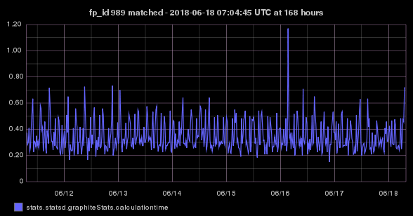
Progeny features profiles :: count :: 4 learnt profiles
990 1304 1330 1331Anomaly :: details :: stats.statsd.graphiteStats.calculationtime
[['metric', 'stats.statsd.graphiteStats.calculationtime'], ['value', 4.0], ['from_timestamp', 1487775600], ['metric_timestamp', 1488379566], ['algorithms', ['histogram_bins', 'first_hour_average', 'stddev_from_average', 'grubbs', 'ks_test', 'mean_subtraction_cumulation', 'median_absolute_deviation', 'stddev_from_moving_average', 'least_squares']], ['triggered_algorithms', ['first_hour_average', 'mean_subtraction_cumulation', 'stddev_from_average', 'stddev_from_moving_average', 'grubbs', 'histogram_bins', 'median_absolute_deviation']], ['anomaly_dir', '/opt/skyline/ionosphere/data/1488379566/stats/statsd/graphiteStats/calculationtime'], ['graphite_metric', True], ['run_crucible_tests', False], ['added_by', 'mirage'], ['added_at', 1488379573], ['full_duration', 604800]]Panorama :: anomaly :: id 43531
Graphite :: anomaly :: parent features profile graph that this ionosphere_learn is based on
If you wish to see the current Graphite graph for stats.statsd.graphiteStats.calculationtime (opens in new tab)
Image file: /opt/skyline/ionosphere/features_profiles/stats/statsd/graphiteStats/calculationtime/1488379566/stats.statsd.graphiteStats.calculationtime.mirage.graphite.168h.png
Graphite :: graphs WHEN created :: at 7h, 24h, 7d and 30d for anomaly at 2017-03-01 14:46:06 UTC (Wednesday)
The ionosphere_learn :: features profile :: was created based on the Graphite NOW at 7 days graph below


Features profile :: enabled :: True
If this features profile was created or learnt incorrectly it can be disabled. Note
all the learnt progeny features profiles listed below (if there are any) will be disabled as well.
Progeny features profiles :: count :: 4 learnt profiles
990 1304 1330 1331Graphite :: profile MATCHED :: the last 20 not anomalous graphs of the 36 matches that this profile has had
Only one graph is displayed per 10 minute period, a profile could match mulitple times in 10 minutes, but only one graph per 10 minute period is displayed 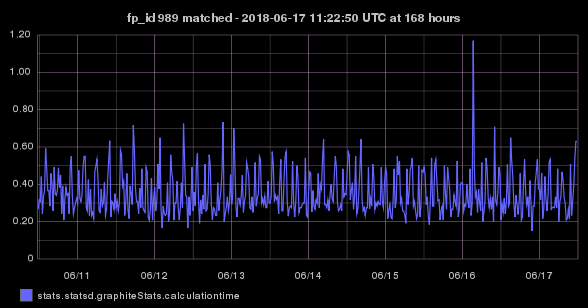 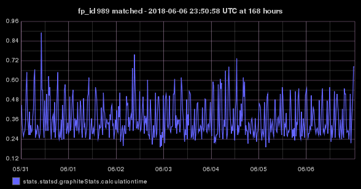
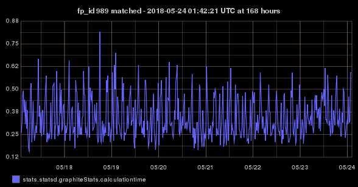
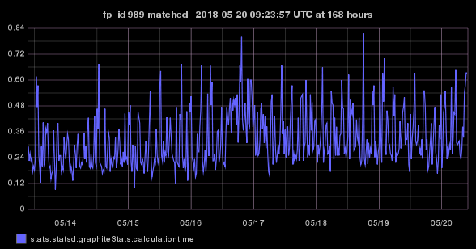
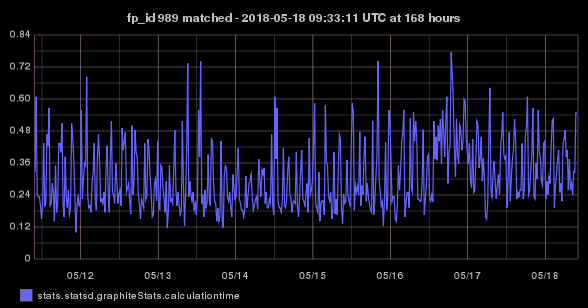
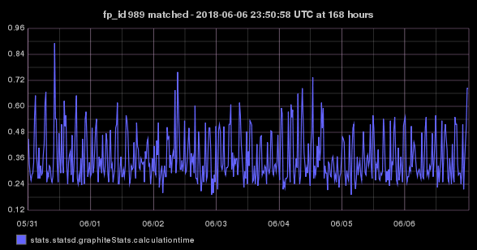
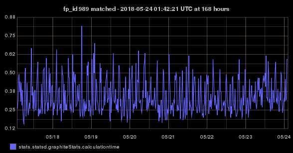
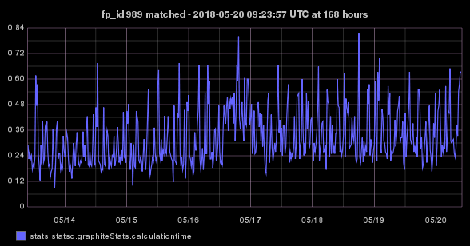
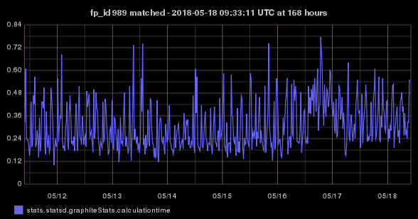

 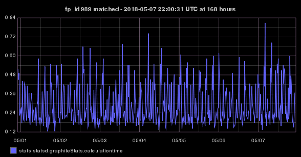
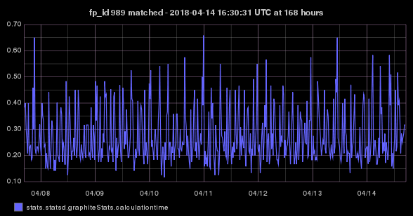
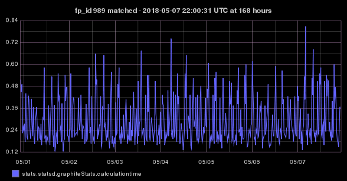
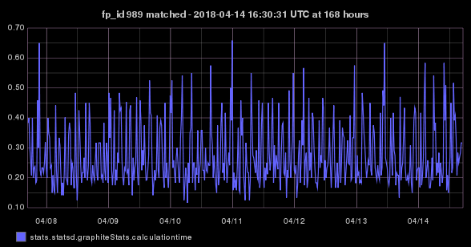
 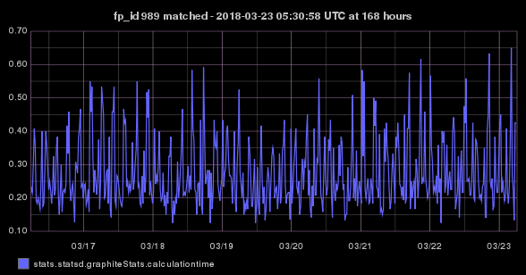
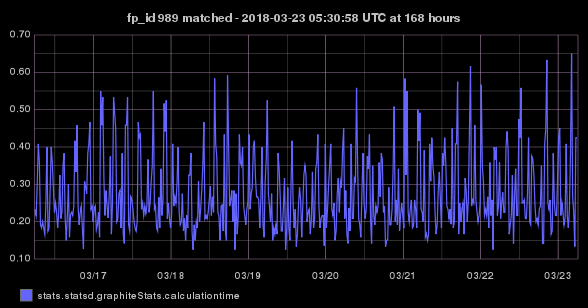

 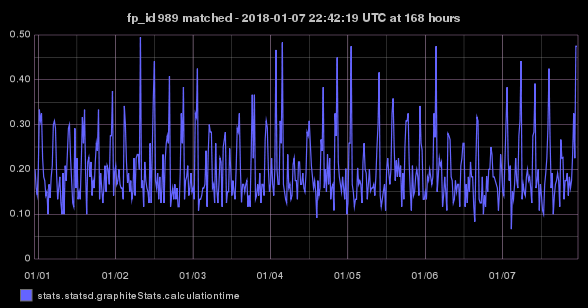
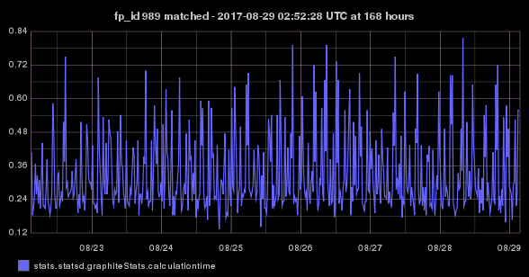
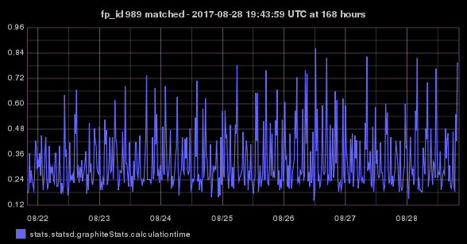
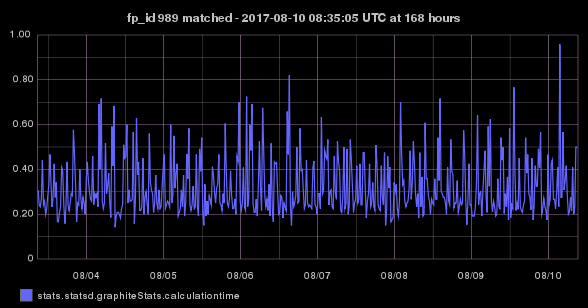
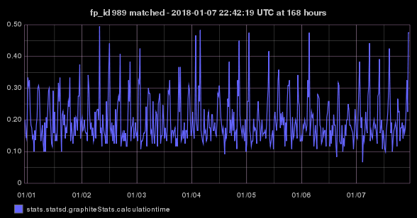
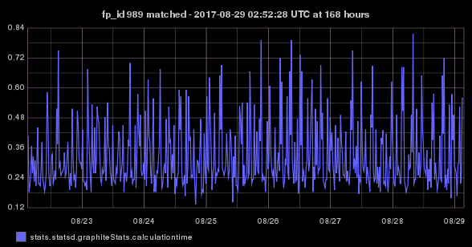
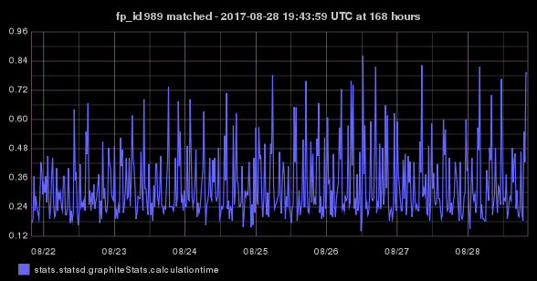
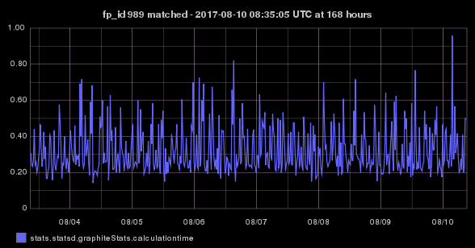

Graphite :: layers MATCHED :: the last 0 not anomalous graphs of the 17 matches that this profile's layers have had
Only one graph is displayed per 10 minute period, a layer could match mulitple times in 10 minutes, but only one graph per 10 minute period is displayed
Redis :: anomaly :: data plot at 24 hours
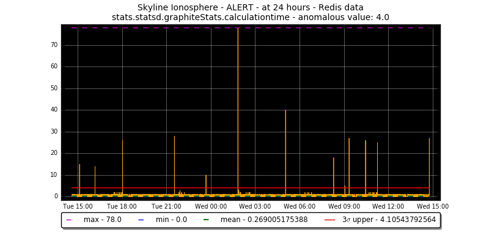Image file: /opt/skyline/ionosphere/features_profiles/stats/statsd/graphiteStats/calculationtime/1488379566/stats.statsd.graphiteStats.calculationtime.mirage.redis.plot.24h.png
Existing :: correlations :: 0
| metric | coefficient | shifted | shifted_coefficient |
|---|
Features :: profile :: files
Timeseries :: anomalous :: json available [['app', 'Mirage'], ['full_duration', 604800]]
['error: no timeseries json file', '/opt/skyline/ionosphere/features_profiles/stats/statsd/graphiteStats/calculationtime/1488379566/stats.statsd.graphiteStats.calculationtime.json', '((1487775000.0, 0.3), (1487775600.0, 0.5999999999999999), (1487776200.0, 0.3333333333333333), (1487776800.0, 0.3533333333333333), (1487777400.0, 0.39999999999999997), (1487778000.0, 0.36666666666666664), (1487778600.0, 0.5), (1487779200.0, 0.2833333333333333), (1487779800.0, 0.2833333333333333), (1487780400.0, 0.36666666666666664), (1487781000.0, 0.19999999999999998), (1487781600.0, 0.2), (1487782200.0, 0.3), (1487782800.0, 0.18333333333333332), (1487783400.0, 0.3), (1487784000.0, 0.2), (1487784600.0, 0.24999999999999994), (1487785200.0, 0.4666666666666666), (1487785800.0, 0.6666666666666667), (1487786400.0, 0.6), (1487787000.0, 0.6666666666666667), (1487787600.0, 0.18333333333333332), (1487788200.0, 0.2166666666666667), (1487788800.0, 0.2), (1487789400.0, 0.23333333333333334), (1487790000.0, 0.15), (1487790600.0, 0.2), (1487791200.0, 0.24999999999999994), (1487791800.0, 0.3666666666666666), (1487792400.0, 0.35000000000000003), (1487793000.0, 0.4), (1487793600.0, 0.2666666666666666), (1487794200.0, 0.36666666666666664), (1487794800.0, 0.29999999999999993), (1487795400.0, 0.18333333333333335), (1487796000.0, 0.18333333333333332), (1487796600.0, 0.2333333333333333), (1487797200.0, 0.15), (1487797800.0, 0.2), (1487798400.0, 0.2833333333333333), (1487799000.0, 0.25), (1487799600.0, 0.18333333333333332), (1487800200.0, 0.15), (1487800800.0, 0.16666666666666666), (1487801400.0, 0.25), (1487802000.0, 0.3), (1487802600.0, 0.5), (1487803200.0, 0.16666666666666666), (1487803800.0, 0.06666666666666667), (1487804400.0, 0.16666666666666666), (1487805000.0, 0.15333333333333335), (1487805600.0, 0.21666666666666665), (1487806200.0, 0.16666666666666666), (1487806800.0, 0.23333333333333334), (1487807400.0, 0.35), (1487808000.0, 0.21666666666666665), (1487808600.0, 0.3333333333333333), (1487809200.0, 0.28333333333333327), (1487809800.0, 0.23333333333333334), (1487810400.0, 0.13333333333333333), (1487811000.0, 0.11666666666666665), (1487811600.0, 0.3333333333333333), (1487812200.0, 0.24999999999999994), (1487812800.0, 0.23333333333333334), (1487813400.0, 0.2333333333333333), (1487814000.0, 0.2), (1487814600.0, 0.26666666666666666), (1487815200.0, 0.2333333333333333), (1487815800.0, 0.21666666666666665), (1487816400.0, 0.16666666666666666), (1487817000.0, 0.2333333333333333), (1487817600.0, 0.5833333333333333), (1487818200.0, 0.23333333333333334), (1487818800.0, 0.26999999999999996), (1487819400.0, 0.2833333333333333), (1487820000.0, 0.2), (1487820600.0, 0.13333333333333333), (1487821200.0, 0.18333333333333332), (1487821800.0, 0.31666666666666665), (1487822400.0, 0.21666666666666665), (1487823000.0, 0.26666666666666666), (1487823600.0, 0.2), (1487824200.0, 0.4166666666666667), (1487824800.0, 0.24999999999999994), (1487825400.0, 0.19999999999999998), (1487826000.0, 0.21666666666666665), (1487826600.0, 0.3), (1487827200.0, 0.16666666666666666), (1487827800.0, 0.2833333333333333), (1487828400.0, 0.21666666666666665), (1487829000.0, 0.18333333333333335), (1487829600.0, 0.2), (1487830200.0, 0.26666666666666666), (1487830800.0, 0.3333333333333333), (1487831400.0, 0.2666666666666667), (1487832000.0, 0.2833333333333333), (1487832600.0, 0.16666666666666669), (1487833200.0, 0.6833333333333333), (1487833800.0, 0.2833333333333333), (1487834400.0, 0.23333333333333334), (1487835000.0, 0.3), (1487835600.0, 0.2833333333333333), (1487836200.0, 0.31666666666666665), (1487836800.0, 0.2333333333333333), (1487837400.0, 0.65), (1487838000.0, 0.4333333333333334), (1487838600.0, 0.35), (1487839200.0, 0.38333333333333336), (1487839800.0, 0.3666666666666667), (1487840400.0, 0.18333333333333332), (1487841000.0, 0.2833333333333333), (1487841600.0, 0.25), (1487842200.0, 0.26666666666666666), (1487842800.0, 0.23333333333333334), (1487843400.0, 0.2), (1487844000.0, 0.21666666666666665), (1487844600.0, 0.2333333333333333), (1487845200.0, 0.25), (1487845800.0, 0.2333333333333333), (1487846400.0, 0.2666666666666667), (1487847000.0, 0.2), (1487847600.0, 0.3), (1487848200.0, 0.16666666666666666), (1487848800.0, 0.21666666666666665), (1487849400.0, 0.2166666666666667), (1487850000.0, 0.21666666666666665), (1487850600.0, 0.24999999999999994), (1487851200.0, 0.13333333333333333), (1487851800.0, 0.2333333333333333), (1487852400.0, 0.6833333333333333), (1487853000.0, 0.31666666666666665), (1487853600.0, 0.3833333333333333), (1487854200.0, 0.33333333333333337), (1487854800.0, 0.3333333333333333), (1487855400.0, 0.2333333333333333), (1487856000.0, 0.19999999999999998), (1487856600.0, 0.2), (1487857200.0, 0.25), (1487857800.0, 0.18333333333333335), (1487858400.0, 0.16666666666666666), (1487859000.0, 0.16666666666666669), (1487859600.0, 0.2), (1487860200.0, 0.5666666666666667), (1487860800.0, 0.23333333333333334), (1487861400.0, 0.22333333333333333), (1487862000.0, 0.2333333333333333), (1487862600.0, 0.23333333333333334), (1487863200.0, 0.2), (1487863800.0, 0.2833333333333333), (1487864400.0, 0.25), (1487865000.0, 0.13333333333333336), (1487865600.0, 0.24999999999999994), (1487866200.0, 0.35), (1487866800.0, 0.2666666666666666), (1487867400.0, 0.19999999999999998), (1487868000.0, 0.16666666666666669), (1487868600.0, 0.3166666666666666), (1487869200.0, 0.33333333333333337), (1487869800.0, 0.31666666666666665), (1487870400.0, 0.5333333333333333), (1487871000.0, 0.7333333333333332), (1487871600.0, 0.2333333333333333), (1487872200.0, 0.21666666666666665), (1487872800.0, 0.25), (1487873400.0, 0.18333333333333332), (1487874000.0, 0.09999999999999999), (1487874600.0, 0.2833333333333333), (1487875200.0, 0.21666666666666665), (1487875800.0, 0.15333333333333332), (1487876400.0, 0.2333333333333333), (1487877000.0, 0.2), (1487877600.0, 0.15), (1487878200.0, 0.18333333333333332), (1487878800.0, 0.25), (1487879400.0, 0.26666666666666666), (1487880000.0, 0.26666666666666666), (1487880600.0, 0.26666666666666666), (1487881200.0, 0.18333333333333332), (1487881800.0, 0.2), (1487882400.0, 0.23333333333333334), (1487883000.0, 0.2666666666666667), (1487883600.0, 0.7333333333333333), (1487884200.0, 0.2833333333333333), (1487884800.0, 0.29999999999999993), (1487885400.0, 0.35000000000000003), (1487886000.0, 0.35), (1487886600.0, 0.75), (1487887200.0, 0.2333333333333333), (1487887800.0, 0.2333333333333333), (1487888400.0, 0.2333333333333333), (1487889000.0, 0.25), (1487889600.0, 0.13666666666666666), (1487890200.0, 0.11666666666666665), (1487890800.0, 0.23333333333333334), (1487891400.0, 0.4333333333333334), (1487892000.0, 0.16666666666666669), (1487892600.0, 0.11666666666666667), (1487893200.0, 0.2333333333333333), (1487893800.0, 0.13333333333333333), (1487894400.0, 0.23333333333333334), (1487895000.0, 0.5166666666666667), (1487895600.0, 0.2), (1487896200.0, 0.2333333333333333), (1487896800.0, 0.3), (1487897400.0, 0.2166666666666667), (1487898000.0, 0.2666666666666667), (1487898600.0, 0.2833333333333333), (1487899200.0, 0.26666666666666666), (1487899800.0, 0.2833333333333333), (1487900400.0, 0.35), (1487901000.0, 0.29999999999999993), (1487901600.0, 0.31666666666666665), (1487902200.0, 0.16666666666666666), (1487902800.0, 0.15), (1487903400.0, 0.21666666666666665), (1487904000.0, 0.15), (1487904600.0, 0.18333333333333332), (1487905200.0, 0.21666666666666665), (1487905800.0, 0.16666666666666669), (1487906400.0, 0.2333333333333333), (1487907000.0, 0.5000000000000001), (1487907600.0, 0.21666666666666665), (1487908200.0, 0.21666666666666665), (1487908800.0, 0.20000000000000004), (1487909400.0, 0.26666666666666666), (1487910000.0, 0.31666666666666665), (1487910600.0, 0.4333333333333333), (1487911200.0, 0.23333333333333334), (1487911800.0, 0.23333333333333334), (1487912400.0, 0.23333333333333334), (1487913000.0, 0.18333333333333332), (1487913600.0, 0.2333333333333333), (1487914200.0, 0.2), (1487914800.0, 0.2), (1487915400.0, 0.36666666666666664), (1487916000.0, 0.21666666666666665), (1487916600.0, 0.4), (1487917200.0, 0.4), (1487917800.0, 0.25), (1487918400.0, 0.24333333333333335), (1487919000.0, 0.24999999999999994), (1487919600.0, 0.18333333333333335), (1487920200.0, 0.2333333333333333), (1487920800.0, 0.23333333333333334), (1487921400.0, 0.24999999999999994), (1487922000.0, 0.18333333333333332), (1487922600.0, 0.2833333333333333), (1487923200.0, 0.2166666666666667), (1487923800.0, 0.21666666666666665), (1487924400.0, 0.21666666666666665), (1487925000.0, 0.25), (1487925600.0, 0.2), (1487926200.0, 0.55), (1487926800.0, 0.16666666666666666), (1487927400.0, 0.18333333333333332), (1487928000.0, 0.14999999999999997), (1487928600.0, 0.16666666666666669), (1487929200.0, 0.21666666666666665), (1487929800.0, 0.18333333333333335), (1487930400.0, 0.4), (1487931000.0, 0.3999999999999999), (1487931600.0, 0.36666666666666664), (1487932200.0, 0.35666666666666663), (1487932800.0, 0.3833333333333333), (1487933400.0, 0.7), (1487934000.0, 0.13333333333333333), (1487934600.0, 0.25), (1487935200.0, 0.21666666666666665), (1487935800.0, 0.18333333333333332), (1487936400.0, 0.16666666666666666), (1487937000.0, 0.15), (1487937600.0, 0.3333333333333333), (1487938200.0, 0.16666666666666669), (1487938800.0, 0.16666666666666666), (1487939400.0, 0.11666666666666665), (1487940000.0, 0.25), (1487940600.0, 0.26666666666666666), (1487941200.0, 0.21666666666666665), (1487941800.0, 0.2), (1487942400.0, 0.25000000000000006), (1487943000.0, 0.2333333333333333), (1487943600.0, 0.21666666666666665), (1487944200.0, 0.2333333333333333), (1487944800.0, 0.16666666666666669), (1487945400.0, 0.21666666666666665), (1487946000.0, 0.35), (1487946600.0, 0.37666666666666665), (1487947200.0, 0.33333333333333337), (1487947800.0, 0.18333333333333332), (1487948400.0, 0.4), (1487949000.0, 0.4333333333333333), (1487949600.0, 0.24999999999999994), (1487950200.0, 0.24999999999999994), (1487950800.0, 0.25000000000000006), (1487951400.0, 0.2333333333333333), (1487952000.0, 0.18333333333333332), (1487952600.0, 0.2333333333333333), (1487953200.0, 0.09999999999999999), (1487953800.0, 0.2), (1487954400.0, 0.2), (1487955000.0, 0.21666666666666665), (1487955600.0, 0.2), (1487956200.0, 0.13333333333333333), (1487956800.0, 0.21666666666666665), (1487957400.0, 0.6000000000000001), (1487958000.0, 0.16666666666666666), (1487958600.0, 0.24999999999999994), (1487959200.0, 0.25), (1487959800.0, 0.2833333333333333), (1487960400.0, 0.2333333333333333), (1487961000.0, 0.18333333333333332), (1487961600.0, 0.8166666666666668), (1487962200.0, 0.4333333333333333), (1487962800.0, 0.45), (1487963400.0, 0.38333333333333336), (1487964000.0, 0.4166666666666667), (1487964600.0, 0.2333333333333333), (1487965200.0, 0.2), (1487965800.0, 0.31666666666666665), (1487966400.0, 0.33333333333333337), (1487967000.0, 0.26666666666666666), (1487967600.0, 0.3), (1487968200.0, 0.3166666666666667), (1487968800.0, 0.21666666666666665), (1487969400.0, 0.6666666666666665), (1487970000.0, 0.3), (1487970600.0, 0.25000000000000006), (1487971200.0, 0.25), (1487971800.0, 0.2666666666666666), (1487972400.0, 0.29999999999999993), (1487973000.0, 0.23333333333333334), (1487973600.0, 0.26666666666666666), (1487974200.0, 0.35), (1487974800.0, 0.12), (1487975400.0, 0.18333333333333332), (1487976000.0, 0.21666666666666665), (1487976600.0, 0.16666666666666666), (1487977200.0, 0.3666666666666667), (1487977800.0, 0.2333333333333333), (1487978400.0, 0.4166666666666667), (1487979000.0, 0.35), (1487979600.0, 0.16666666666666666), (1487980200.0, 0.18333333333333335), (1487980800.0, 0.2), (1487981400.0, 0.14999999999999997), (1487982000.0, 0.2), (1487982600.0, 0.15), (1487983200.0, 0.19999999999999998), (1487983800.0, 0.21666666666666665), (1487984400.0, 0.2666666666666667), (1487985000.0, 0.24999999999999994), (1487985600.0, 0.15), (1487986200.0, 0.25), (1487986800.0, 0.25), (1487987400.0, 0.18333333333333332), (1487988000.0, 0.26666666666666666), (1487988600.0, 0.23666666666666666), (1487989200.0, 0.2833333333333333), (1487989800.0, 0.16666666666666669), (1487990400.0, 0.25), (1487991000.0, 0.11666666666666667), (1487991600.0, 0.2), (1487992200.0, 0.25), (1487992800.0, 0.3), (1487993400.0, 0.35), (1487994000.0, 0.38333333333333325), (1487994600.0, 0.35), (1487995200.0, 0.21666666666666665), (1487995800.0, 0.2), (1487996400.0, 0.2), (1487997000.0, 0.16666666666666666), (1487997600.0, 0.15), (1487998200.0, 0.23333333333333334), (1487998800.0, 0.25), (1487999400.0, 0.35), (1488000000.0, 0.15), (1488000600.0, 0.26666666666666666), (1488001200.0, 0.2333333333333333), (1488001800.0, 0.26666666666666666), (1488002400.0, 0.25), (1488003000.0, 0.2), (1488003600.0, 0.15), (1488004200.0, 0.3833333333333333), (1488004800.0, 0.2833333333333333), (1488005400.0, 0.2), (1488006000.0, 0.2333333333333333), (1488006600.0, 0.16666666666666666), (1488007200.0, 0.11666666666666665), (1488007800.0, 0.6166666666666668), (1488008400.0, 0.39999999999999997), (1488009000.0, 0.35), (1488009600.0, 0.4499999999999999), (1488010200.0, 0.5), (1488010800.0, 0.2), (1488011400.0, 0.2333333333333333), (1488012000.0, 0.2333333333333333), (1488012600.0, 0.2166666666666667), (1488013200.0, 0.18333333333333332), (1488013800.0, 0.25), (1488014400.0, 0.18333333333333335), (1488015000.0, 0.2166666666666667), (1488015600.0, 0.2333333333333333), (1488016200.0, 0.2), (1488016800.0, 0.14999999999999997), (1488017400.0, 0.15), (1488018000.0, 0.24999999999999994), (1488018600.0, 0.13333333333333333), (1488019200.0, 0.7), (1488019800.0, 0.18333333333333332), (1488020400.0, 0.3), (1488021000.0, 0.2666666666666666), (1488021600.0, 0.13333333333333333), (1488022200.0, 0.18333333333333332), (1488022800.0, 0.2), (1488023400.0, 0.31666666666666665), (1488024000.0, 0.5166666666666666), (1488024600.0, 0.4), (1488025200.0, 0.4166666666666667), (1488025800.0, 0.6166666666666667), (1488026400.0, 0.11666666666666665), (1488027000.0, 0.16666666666666669), (1488027600.0, 0.18333333333333332), (1488028200.0, 0.25), (1488028800.0, 0.18333333333333332), (1488029400.0, 0.2), (1488030000.0, 0.2), (1488030600.0, 0.16666666666666669), (1488031200.0, 0.19999999999999998), (1488031800.0, 0.25), (1488032400.0, 0.16666666666666669), (1488033000.0, 0.18333333333333335), (1488033600.0, 0.21666666666666665), (1488034200.0, 0.3), (1488034800.0, 0.19999999999999998), (1488035400.0, 0.18333333333333335), (1488036000.0, 0.25), (1488036600.0, 0.16666666666666666), (1488037200.0, 0.21666666666666665), (1488037800.0, 0.25), (1488038400.0, 0.6333333333333333), (1488039000.0, 0.3333333333333333), (1488039600.0, 0.26666666666666666), (1488040200.0, 0.31666666666666665), (1488040800.0, 0.2833333333333333), (1488041400.0, 0.6333333333333334), (1488042000.0, 0.13333333333333333), (1488042600.0, 0.18333333333333332), (1488043200.0, 0.31666666666666665), (1488043800.0, 0.13333333333333333), (1488044400.0, 0.21666666666666665), (1488045000.0, 0.15), (1488045600.0, 0.24), (1488046200.0, 0.16666666666666666), (1488046800.0, 0.2333333333333333), (1488047400.0, 0.19999999999999998), (1488048000.0, 0.13333333333333333), (1488048600.0, 0.31666666666666665), (1488049200.0, 0.19999999999999998), (1488049800.0, 0.2833333333333333), (1488050400.0, 0.18333333333333332), (1488051000.0, 0.16666666666666669), (1488051600.0, 0.2833333333333333), (1488052200.0, 0.2), (1488052800.0, 0.18333333333333332), (1488053400.0, 0.26666666666666666), (1488054000.0, 0.24999999999999994), (1488054600.0, 0.2833333333333333), (1488055200.0, 0.2833333333333333), (1488055800.0, 0.35), (1488056400.0, 0.36666666666666664), (1488057000.0, 0.2666666666666667), (1488057600.0, 0.2333333333333333), (1488058200.0, 0.2666666666666667), (1488058800.0, 0.18333333333333332), (1488059400.0, 0.15000000000000002), (1488060000.0, 0.18333333333333332), (1488060600.0, 0.21666666666666665), (1488061200.0, 0.18333333333333335), (1488061800.0, 0.4666666666666667), (1488062400.0, 0.23333333333333334), (1488063000.0, 0.2), (1488063600.0, 0.2333333333333333), (1488064200.0, 0.2), (1488064800.0, 0.19999999999999998), (1488065400.0, 0.2833333333333333), (1488066000.0, 0.26666666666666666), (1488066600.0, 0.21666666666666665), (1488067200.0, 0.11666666666666665), (1488067800.0, 0.16666666666666669), (1488068400.0, 0.13333333333333333), (1488069000.0, 0.16666666666666666), (1488069600.0, 0.5333333333333334), (1488070200.0, 0.30000000000000004), (1488070800.0, 0.35), (1488071400.0, 0.3333333333333333), (1488072000.0, 0.4333333333333333), (1488072600.0, 0.5166666666666668), (1488073200.0, 0.2), (1488073800.0, 0.11666666666666665), (1488074400.0, 0.21666666666666665), (1488075000.0, 0.2666666666666667), (1488075600.0, 0.21666666666666665), (1488076200.0, 0.09999999999999999), (1488076800.0, 0.2333333333333333), (1488077400.0, 0.2666666666666667), (1488078000.0, 0.15), (1488078600.0, 0.08333333333333333), (1488079200.0, 0.16666666666666669), (1488079800.0, 0.14999999999999997), (1488080400.0, 0.16666666666666666), (1488081000.0, 0.5166666666666666), (1488081600.0, 0.11666666666666665), (1488082200.0, 0.2), (1488082800.0, 0.13333333333333333), (1488083400.0, 0.18333333333333332), (1488084000.0, 0.13333333333333333), (1488084600.0, 0.09999999999999999), (1488085200.0, 0.25), (1488085800.0, 0.25), (1488086400.0, 0.35), (1488087000.0, 0.26666666666666666), (1488087600.0, 0.7933333333333332), (1488088200.0, 0.2333333333333333), (1488088800.0, 0.21666666666666665), (1488089400.0, 0.23333333333333334), (1488090000.0, 0.19999999999999998), (1488090600.0, 0.2333333333333333), (1488091200.0, 0.2), (1488091800.0, 0.13333333333333333), (1488092400.0, 0.15), (1488093000.0, 0.15000000000000002), (1488093600.0, 0.16666666666666666), (1488094200.0, 0.16666666666666669), (1488094800.0, 0.16666666666666669), (1488095400.0, 0.19999999999999998), (1488096000.0, 0.24999999999999994), (1488096600.0, 0.41666666666666663), (1488097200.0, 0.25), (1488097800.0, 0.25000000000000006), (1488098400.0, 0.1833333333333333), (1488099000.0, 0.25), (1488099600.0, 0.11666666666666667), (1488100200.0, 0.23333333333333334), (1488100800.0, 0.3), (1488101400.0, 0.3666666666666667), (1488102000.0, 0.23666666666666666), (1488102600.0, 0.3), (1488103200.0, 0.8666666666666668), (1488103800.0, 0.3), (1488104400.0, 0.2833333333333333), (1488105000.0, 0.3833333333333333), (1488105600.0, 0.25), (1488106200.0, 0.21666666666666665), (1488106800.0, 0.23333333333333334), (1488107400.0, 0.21666666666666665), (1488108000.0, 0.26666666666666666), (1488108600.0, 0.18333333333333335), (1488109200.0, 0.19999999999999998), (1488109800.0, 0.16666666666666666), (1488110400.0, 0.21666666666666665), (1488111000.0, 0.15), (1488111600.0, 0.2833333333333333), (1488112200.0, 0.13333333333333333), (1488112800.0, 0.13333333333333333), (1488113400.0, 0.2), (1488114000.0, 0.1833333333333333), (1488114600.0, 0.16666666666666669), (1488115200.0, 0.25), (1488115800.0, 0.6333333333333333), (1488116400.0, 0.3166666666666666), (1488117000.0, 0.38333333333333336), (1488117600.0, 0.29999999999999993), (1488118200.0, 0.33333333333333337), (1488118800.0, 0.55), (1488119400.0, 0.2833333333333333), (1488120000.0, 0.16666666666666669), (1488120600.0, 0.23333333333333334), (1488121200.0, 0.1), (1488121800.0, 0.16666666666666666), (1488122400.0, 0.16666666666666666), (1488123000.0, 0.16666666666666669), (1488123600.0, 0.2833333333333333), (1488124200.0, 0.19999999999999998), (1488124800.0, 0.16666666666666669), (1488125400.0, 0.25), (1488126000.0, 0.19999999999999998), (1488126600.0, 0.2), (1488127200.0, 0.5166666666666667), (1488127800.0, 0.2), (1488128400.0, 0.16666666666666666), (1488129000.0, 0.2833333333333333), (1488129600.0, 0.23333333333333334), (1488130200.0, 0.2666666666666667), (1488130800.0, 0.16999999999999998), (1488131400.0, 0.3166666666666667), (1488132000.0, 0.23333333333333334), (1488132600.0, 0.3666666666666667), (1488133200.0, 0.2333333333333333), (1488133800.0, 0.35), (1488134400.0, 0.55), (1488135000.0, 0.1833333333333333), (1488135600.0, 0.21666666666666665), (1488136200.0, 0.26666666666666666), (1488136800.0, 0.2), (1488137400.0, 0.18333333333333338), (1488138000.0, 0.25), (1488138600.0, 0.13333333333333333), (1488139200.0, 0.4166666666666667), (1488139800.0, 0.23333333333333334), (1488140400.0, 0.2), (1488141000.0, 0.2), (1488141600.0, 0.2333333333333333), (1488142200.0, 0.3), (1488142800.0, 0.5833333333333333), (1488143400.0, 0.16666666666666669), (1488144000.0, 0.35), (1488144600.0, 0.25), (1488145200.0, 0.2333333333333333), (1488145800.0, 0.2833333333333333), (1488146400.0, 0.1833333333333333), (1488147000.0, 0.25), (1488147600.0, 0.23333333333333334), (1488148200.0, 0.26666666666666666), (1488148800.0, 0.31666666666666665), (1488149400.0, 0.2833333333333333), (1488150000.0, 0.45), (1488150600.0, 0.24999999999999994), (1488151200.0, 0.23333333333333334), (1488151800.0, 0.13333333333333333), (1488152400.0, 0.16666666666666666), (1488153000.0, 0.11666666666666665), (1488153600.0, 0.19999999999999998), (1488154200.0, 0.15), (1488154800.0, 0.2333333333333333), (1488155400.0, 0.2833333333333333), (1488156000.0, 0.25000000000000006), (1488156600.0, 0.15), (1488157200.0, 0.19999999999999998), (1488157800.0, 0.2833333333333333), (1488158400.0, 0.18333333333333332), (1488159000.0, 0.27), (1488159600.0, 0.15), (1488160200.0, 0.08333333333333333), (1488160800.0, 0.2333333333333333), (1488161400.0, 0.23333333333333334), (1488162000.0, 0.23333333333333334), (1488162600.0, 0.4833333333333333), (1488163200.0, 0.38333333333333336), (1488163800.0, 0.30000000000000004), (1488164400.0, 0.31666666666666665), (1488165000.0, 0.25000000000000006), (1488165600.0, 0.13333333333333333), (1488166200.0, 0.29999999999999993), (1488166800.0, 0.23333333333333334), (1488167400.0, 0.18333333333333335), (1488168000.0, 0.16666666666666669), (1488168600.0, 0.21666666666666665), (1488169200.0, 0.25), (1488169800.0, 0.11666666666666667), (1488170400.0, 0.35), (1488171000.0, 0.25), (1488171600.0, 0.2833333333333333), (1488172200.0, 0.21666666666666665), (1488172800.0, 0.18333333333333332), (1488173400.0, 0.17), (1488174000.0, 0.26666666666666666), (1488174600.0, 0.2333333333333333), (1488175200.0, 0.16666666666666666), (1488175800.0, 0.18333333333333335), (1488176400.0, 0.16666666666666666), (1488177000.0, 0.25), (1488177600.0, 0.21666666666666665), (1488178200.0, 0.5999999999999999), (1488178800.0, 0.3), (1488179400.0, 0.21666666666666665), (1488180000.0, 0.35), (1488180600.0, 0.7), (1488181200.0, 0.25), (1488181800.0, 0.26666666666666666), (1488182400.0, 0.14999999999999997), (1488183000.0, 0.21666666666666665), (1488183600.0, 0.21666666666666665), (1488184200.0, 0.19999999999999998), (1488184800.0, 0.2), (1488185400.0, 0.2), (1488186000.0, 0.26666666666666666), (1488186600.0, 0.21666666666666665), (1488187200.0, 0.2), (1488187800.0, 0.20666666666666664), (1488188400.0, 0.2333333333333333), (1488189000.0, 0.13333333333333333), (1488189600.0, 0.2333333333333333), (1488190200.0, 0.16666666666666669), (1488190800.0, 0.16666666666666669), (1488191400.0, 0.18333333333333335), (1488192000.0, 0.21666666666666665), (1488192600.0, 0.2333333333333333), (1488193200.0, 0.5333333333333333), (1488193800.0, 0.4), (1488194400.0, 0.45), (1488195000.0, 0.3166666666666666), (1488195600.0, 0.35), (1488196200.0, 0.3333333333333333), (1488196800.0, 0.2), (1488197400.0, 0.13333333333333333), (1488198000.0, 0.19999999999999998), (1488198600.0, 0.2333333333333333), (1488199200.0, 0.09999999999999999), (1488199800.0, 0.16666666666666669), (1488200400.0, 0.3), (1488201000.0, 0.3833333333333333), (1488201600.0, 0.2033333333333333), (1488202200.0, 0.2666666666666666), (1488202800.0, 0.21666666666666665), (1488203400.0, 0.25), (1488204000.0, 0.2333333333333333), (1488204600.0, 0.4833333333333333), (1488205200.0, 0.16666666666666666), (1488205800.0, 0.26666666666666666), (1488206400.0, 0.16666666666666669), (1488207000.0, 0.13333333333333333), (1488207600.0, 0.26666666666666666), (1488208200.0, 0.21666666666666665), (1488208800.0, 0.31666666666666665), (1488209400.0, 0.33333333333333337), (1488210000.0, 0.2833333333333333), (1488210600.0, 0.36666666666666664), (1488211200.0, 0.36666666666666664), (1488211800.0, 0.31666666666666665), (1488212400.0, 0.21666666666666665), (1488213000.0, 0.2), (1488213600.0, 0.2833333333333333), (1488214200.0, 0.18333333333333332), (1488214800.0, 0.31666666666666665), (1488215400.0, 0.2166666666666667), (1488216000.0, 0.19), (1488216600.0, 0.14999999999999997), (1488217200.0, 0.2), (1488217800.0, 0.2666666666666667), (1488218400.0, 0.16666666666666669), (1488219000.0, 0.11666666666666665), (1488219600.0, 0.25), (1488220200.0, 0.25), (1488220800.0, 0.23333333333333334), (1488221400.0, 0.2), (1488222000.0, 0.19999999999999998), (1488222600.0, 0.25), (1488223200.0, 0.25), (1488223800.0, 0.16666666666666669), (1488224400.0, 0.5666666666666667), (1488225000.0, 0.31666666666666665), (1488225600.0, 0.3), (1488226200.0, 0.31666666666666665), (1488226800.0, 0.35000000000000003), (1488227400.0, 0.3833333333333333), (1488228000.0, 0.18333333333333335), (1488228600.0, 0.2666666666666667), (1488229200.0, 0.2), (1488229800.0, 0.24000000000000005), (1488230400.0, 0.21666666666666665), (1488231000.0, 0.2333333333333333), (1488231600.0, 0.2), (1488232200.0, 0.31666666666666665), (1488232800.0, 0.16666666666666669), (1488233400.0, 0.25), (1488234000.0, 0.2166666666666667), (1488234600.0, 0.21666666666666665), (1488235200.0, 0.19999999999999998), (1488235800.0, 0.4333333333333334), (1488236400.0, 0.2), (1488237000.0, 0.24999999999999994), (1488237600.0, 0.26666666666666666), (1488238200.0, 0.18333333333333335), (1488238800.0, 0.16666666666666666), (1488239400.0, 0.2333333333333333), (1488240000.0, 0.3), (1488240600.0, 0.3833333333333333), (1488241200.0, 0.36666666666666675), (1488241800.0, 0.4166666666666667), (1488242400.0, 0.6333333333333333), (1488243000.0, 0.2), (1488243600.0, 0.2333333333333333), (1488244200.0, 0.23999999999999994), (1488244800.0, 0.2333333333333333), (1488245400.0, 0.2), (1488246000.0, 0.25000000000000006), (1488246600.0, 0.21666666666666665), (1488247200.0, 0.24999999999999994), (1488247800.0, 0.16666666666666669), (1488248400.0, 0.29999999999999993), (1488249000.0, 0.15), (1488249600.0, 0.1833333333333333), (1488250200.0, 0.31666666666666665), (1488250800.0, 0.24999999999999994), (1488251400.0, 0.25), (1488252000.0, 0.2166666666666667), (1488252600.0, 0.25000000000000006), (1488253200.0, 0.23333333333333334), (1488253800.0, 0.25000000000000006), (1488254400.0, 0.26666666666666666), (1488255000.0, 0.6), (1488255600.0, 0.3166666666666666), (1488256200.0, 0.43333333333333324), (1488256800.0, 0.2666666666666667), (1488257400.0, 0.3833333333333333), (1488258000.0, 0.6766666666666667), (1488258600.0, 0.29999999999999993), (1488259200.0, 0.2), (1488259800.0, 0.19999999999999998), (1488260400.0, 0.24999999999999994), (1488261000.0, 0.26666666666666666), (1488261600.0, 0.2), (1488262200.0, 0.2), (1488262800.0, 0.26666666666666666), (1488263400.0, 0.18333333333333332), (1488264000.0, 0.2), (1488264600.0, 0.2333333333333333), (1488265200.0, 0.1833333333333333), (1488265800.0, 0.18333333333333335), (1488266400.0, 0.15), (1488267000.0, 0.2), (1488267600.0, 0.31666666666666665), (1488268200.0, 0.2333333333333333), (1488268800.0, 0.21666666666666665), (1488269400.0, 0.2333333333333333), (1488270000.0, 0.3166666666666667), (1488270600.0, 0.4833333333333334), (1488271200.0, 0.31666666666666665), (1488271800.0, 0.3), (1488272400.0, 0.43), (1488273000.0, 0.35), (1488273600.0, 0.3833333333333333), (1488274200.0, 0.2333333333333333), (1488274800.0, 0.1), (1488275400.0, 0.15000000000000002), (1488276000.0, 0.21666666666666665), (1488276600.0, 0.16666666666666666), (1488277200.0, 0.16666666666666669), (1488277800.0, 0.16666666666666666), (1488278400.0, 0.25), (1488279000.0, 0.2333333333333333), (1488279600.0, 0.09999999999999999), (1488280200.0, 0.19999999999999998), (1488280800.0, 0.16666666666666666), (1488281400.0, 0.13333333333333333), (1488282000.0, 0.23333333333333334), (1488282600.0, 0.18333333333333335), (1488283200.0, 0.21666666666666665), (1488283800.0, 0.14999999999999997), (1488284400.0, 0.2), (1488285000.0, 0.26666666666666666), (1488285600.0, 0.21666666666666665), (1488286200.0, 0.15333333333333332), (1488286800.0, 0.33333333333333337), (1488287400.0, 0.3), (1488288000.0, 0.33333333333333337), (1488288600.0, 0.4), (1488289200.0, 0.2833333333333333), (1488289800.0, 0.18333333333333335), (1488290400.0, 0.20000000000000004), (1488291000.0, 0.21666666666666665), (1488291600.0, 0.2333333333333333), (1488292200.0, 0.25), (1488292800.0, 0.25), (1488293400.0, 0.16666666666666666), (1488294000.0, 0.4833333333333333), (1488294600.0, 0.21666666666666665), (1488295200.0, 0.15), (1488295800.0, 0.25), (1488296400.0, 0.21666666666666665), (1488297000.0, 0.29999999999999993), (1488297600.0, 0.1833333333333333), (1488298200.0, 0.4333333333333333), (1488298800.0, 0.11666666666666665), (1488299400.0, 0.15), (1488300000.0, 0.2833333333333333), (1488300600.0, 0.22333333333333333), (1488301200.0, 0.23333333333333334), (1488301800.0, 0.15), (1488302400.0, 0.38333333333333336), (1488303000.0, 0.36666666666666664), (1488303600.0, 0.25), (1488304200.0, 0.36666666666666664), (1488304800.0, 0.7), (1488305400.0, 0.24999999999999994), (1488306000.0, 0.1), (1488306600.0, 0.09999999999999999), (1488307200.0, 0.2333333333333333), (1488307800.0, 0.24999999999999994), (1488308400.0, 0.2), (1488309000.0, 0.16666666666666669), (1488309600.0, 0.2166666666666667), (1488310200.0, 0.21666666666666665), (1488310800.0, 0.35), (1488311400.0, 0.3), (1488312000.0, 0.25), (1488312600.0, 0.21666666666666665), (1488313200.0, 0.16666666666666666), (1488313800.0, 0.13333333333333333), (1488314400.0, 0.25000000000000006), (1488315000.0, 0.26666666666666666), (1488315600.0, 0.2), (1488316200.0, 0.2333333333333333), (1488316800.0, 0.09999999999999999), (1488317400.0, 0.7666666666666667), (1488318000.0, 0.2666666666666667), (1488318600.0, 0.2833333333333333), (1488319200.0, 0.3166666666666666), (1488319800.0, 0.2666666666666667), (1488320400.0, 0.18333333333333332), (1488321000.0, 0.16666666666666669), (1488321600.0, 0.24999999999999994), (1488322200.0, 0.25), (1488322800.0, 0.18333333333333332), (1488323400.0, 0.16666666666666666), (1488324000.0, 0.19999999999999998), (1488324600.0, 0.15000000000000002), (1488325200.0, 0.4333333333333334), (1488325800.0, 0.13333333333333333), (1488326400.0, 0.2), (1488327000.0, 0.2), (1488327600.0, 0.29999999999999993), (1488328200.0, 0.2), (1488328800.0, 0.2566666666666667), (1488329400.0, 0.26666666666666666), (1488330000.0, 0.2), (1488330600.0, 0.11666666666666665), (1488331200.0, 0.2166666666666667), (1488331800.0, 0.2333333333333333), (1488332400.0, 1.5333333333333332), (1488333000.0, 0.4), (1488333600.0, 0.31666666666666665), (1488334200.0, 0.3833333333333333), (1488334800.0, 0.29999999999999993), (1488335400.0, 0.35), (1488336000.0, 0.21666666666666665), (1488336600.0, 0.21666666666666665), (1488337200.0, 0.18333333333333332), (1488337800.0, 0.16666666666666669), (1488338400.0, 0.18333333333333332), (1488339000.0, 0.18333333333333335), (1488339600.0, 0.18333333333333335), (1488340200.0, 0.2), (1488340800.0, 0.2333333333333333), (1488341400.0, 0.16666666666666669), (1488342000.0, 0.11666666666666665), (1488342600.0, 0.13333333333333333), (1488343200.0, 0.15), (1488343800.0, 0.21666666666666665), (1488344400.0, 0.9166666666666666), (1488345000.0, 0.2833333333333333), (1488345600.0, 0.18333333333333332), (1488346200.0, 0.18333333333333332), (1488346800.0, 0.3), (1488347400.0, 0.21666666666666665), (1488348000.0, 0.2333333333333333), (1488348600.0, 0.2833333333333333), (1488349200.0, 0.35), (1488349800.0, 0.4333333333333334), (1488350400.0, 0.4166666666666667), (1488351000.0, 0.25), (1488351600.0, 0.21666666666666665), (1488352200.0, 0.2333333333333333), (1488352800.0, 0.2166666666666667), (1488353400.0, 0.25), (1488354000.0, 0.2666666666666666), (1488354600.0, 0.24999999999999994), (1488355200.0, 0.2833333333333333), (1488355800.0, 0.5333333333333333), (1488356400.0, 0.16666666666666669), (1488357000.0, 0.18333333333333335), (1488357600.0, 0.31666666666666665), (1488358200.0, 0.25), (1488358800.0, 0.29999999999999993), (1488359400.0, 0.2666666666666666), (1488360000.0, 0.65), (1488360600.0, 0.13333333333333333), (1488361200.0, 0.16666666666666669), (1488361800.0, 0.2333333333333333), (1488362400.0, 0.21666666666666665), (1488363000.0, 0.15), (1488363600.0, 0.6666666666666666), (1488364200.0, 0.3), (1488364800.0, 0.45), (1488365400.0, 0.2333333333333333), (1488366000.0, 0.4), (1488366600.0, 0.6666666666666666), (1488367200.0, 0.23333333333333334), (1488367800.0, 0.2), (1488368400.0, 0.13333333333333333), (1488369000.0, 0.2666666666666667), (1488369600.0, 0.2), (1488370200.0, 0.18333333333333332), (1488370800.0, 0.2), (1488371400.0, 0.21666666666666665), (1488372000.0, 0.29999999999999993), (1488372600.0, 0.18333333333333332), (1488373200.0, 0.21666666666666665), (1488373800.0, 0.11666666666666667), (1488374400.0, 0.18333333333333335), (1488375000.0, 0.2833333333333333), (1488375600.0, 0.14999999999999997), (1488376200.0, 0.19999999999999998), (1488376800.0, 0.26666666666666666), (1488377400.0, 0.25), (1488378000.0, 0.21666666666666665), (1488378600.0, 0.16666666666666666), (1488379200.0, 4.0))']Timeseries :: anomalous :: json available [['app', 'Analyzer'], ['full_duration', 86400]]
[[1488379296.0, 0.0], [1488379306.0, 0.0], [1488379316.0, 0.0], [1488379326.0, 0.0], [1488379336.0, 0.0], [1488379346.0, 0.0], [1488379356.0, 1.0], [1488379366.0, 0.0], [1488379376.0, 0.0], [1488379386.0, 0.0], [1488379396.0, 0.0], [1488379406.0, 0.0], [1488379416.0, 0.0], [1488379426.0, 0.0], [1488379436.0, 1.0], [1488379446.0, 0.0], [1488379456.0, 1.0], [1488379466.0, 1.0], [1488379476.0, 0.0], [1488379486.0, 0.0], [1488379496.0, 0.0], [1488379506.0, 0.0], [1488379516.0, 0.0], [1488379526.0, 0.0], [1488379536.0, 1.0], [1488379546.0, 0.0], [1488379556.0, 0.0], [1488379566.0, 27.0], [1488379576.0, 0.0], [1488379586.0, 1.0]]| None | That are known of at the present time |